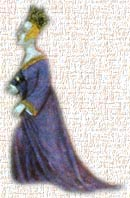

My LifeMy name is Alys Montfort. I was born on the fifth day of March in the year of our Lord 1343. Last year, when I was 16, I married my cousin Peter Montfort, who was then 18. We are expecting our first child around Christmastide. My husband and I live in a lovely manor house in Defford. My husband’s father granted this manor, one of three owned by the Montfort family, to my husband as a wedding gift.